2011–2014 Kavárny a restaurace
Cafe Bulldog
Břeclav
Kavárna v Břeclavi, která dostala novou fasádu i celý interiér. Tmavé dřevo, zelené obložení, kované prvky a barevné vitráže.
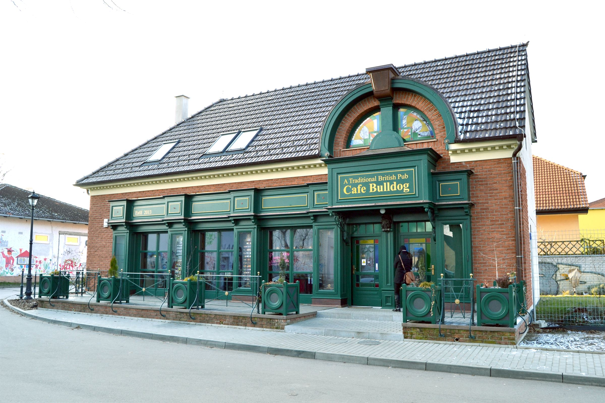
01 O projektu
O projektu
Z obyčejné přízemní budovy se stala kavárna s výraznou tváří do ulice – zelená dřevěná fasáda s výlohami, oblouk s vitráží a kované konzoly lamp.
Interiér je navržený do detailu: barový pult, kazetové stropy, čalouněné boxy, dveře s vitrážemi i lampy. Většina prvků vznikala na míru v truhlářské dílně.
Vitráže vznikly ve spolupráci s výtvarníky Miroslavem Mrázem a Pavlem Doležalem – v moderním stylu inspirovaném přírodou a organickými tvary.
02 Fotografie
Realizace

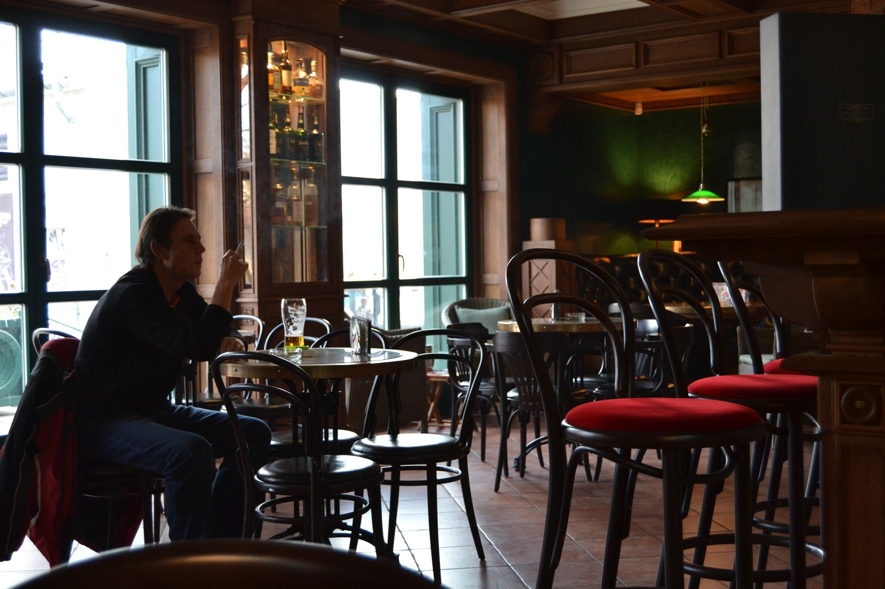

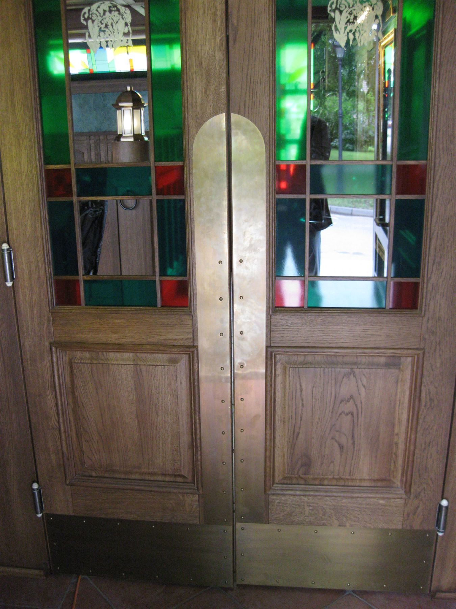

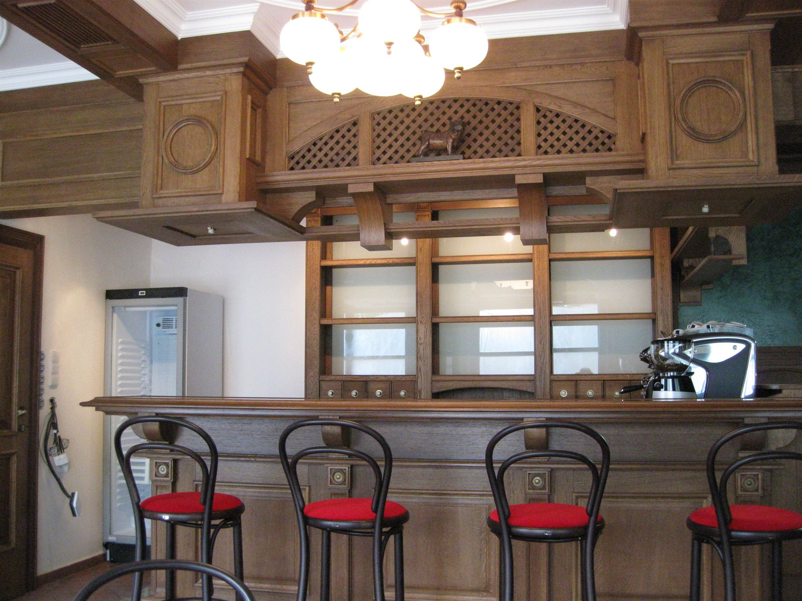

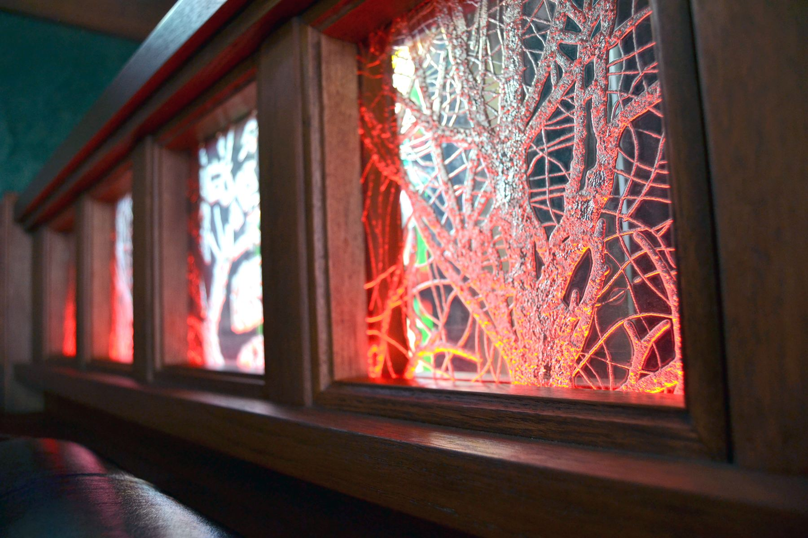

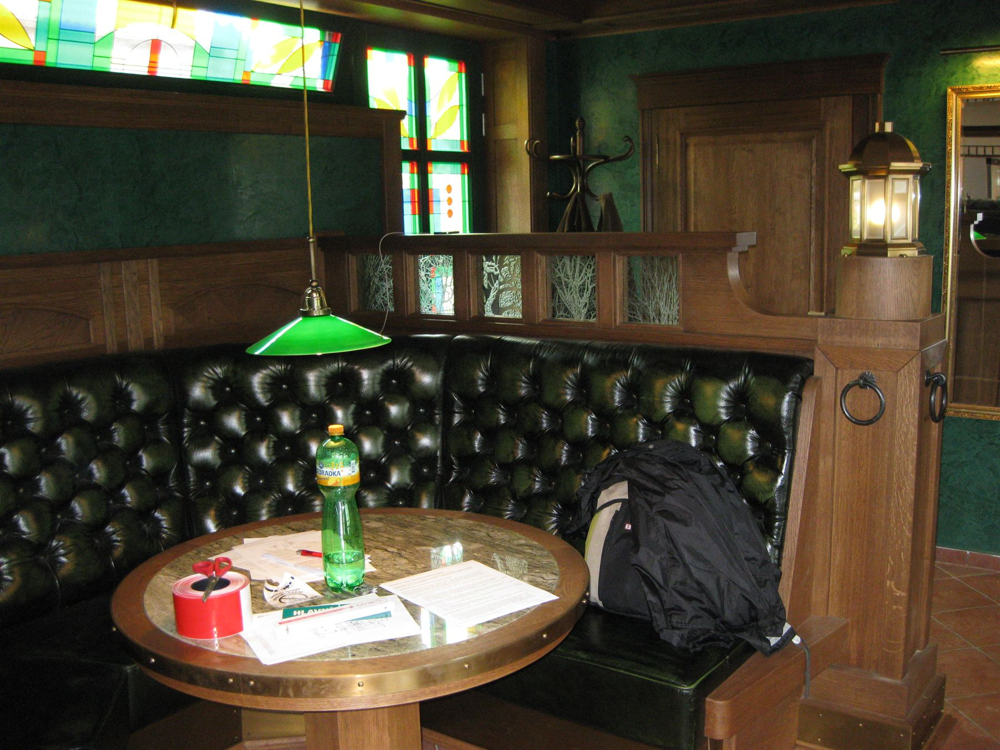

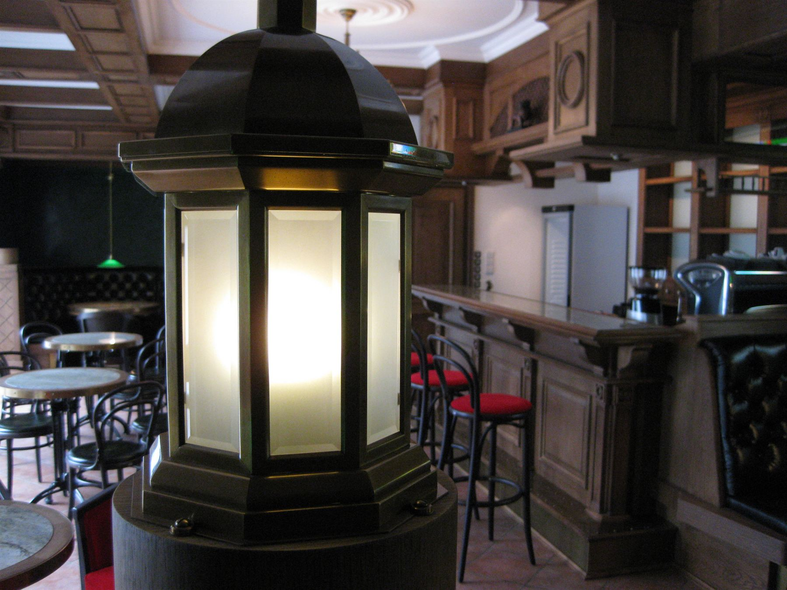

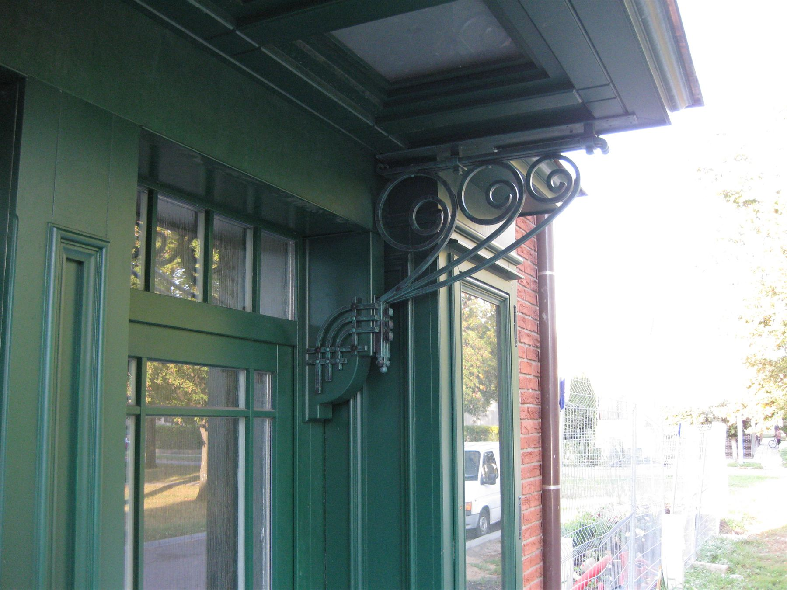

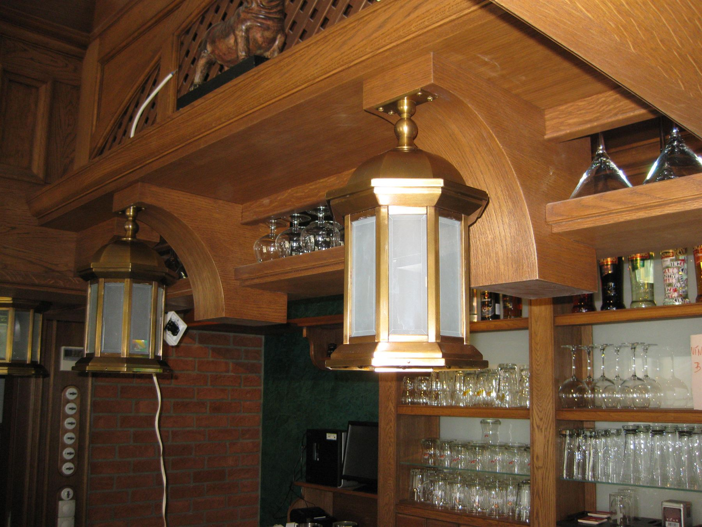
03 Před / Po
Před a po
Stejná budova před přestavbou a po ní. Fasáda je celá ze dřeva, vyrobená a osazená na míru.
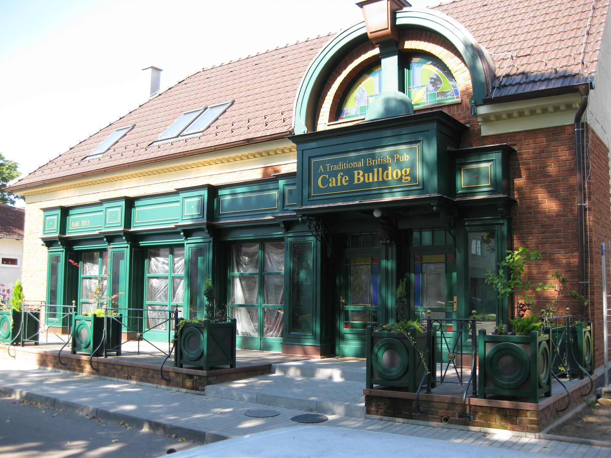
Před Po04 Výkresy a skici
Výkresy, model a dílna
Fasáda nejdřív vznikla na výkresech a v pracovním modelu, teprve pak v dílně.

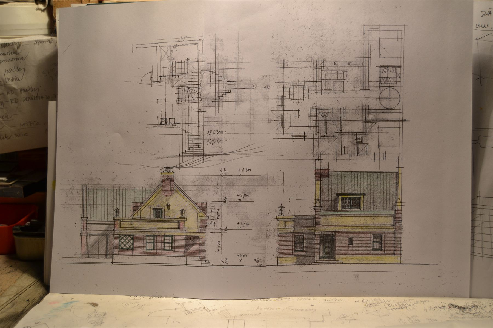

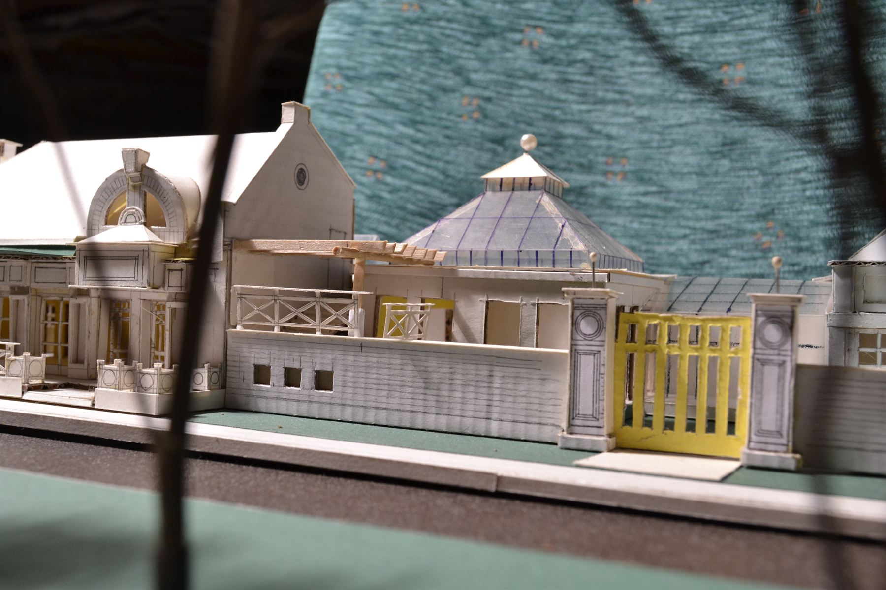

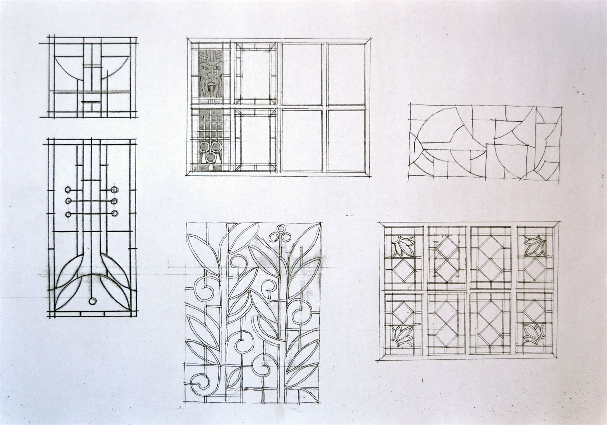

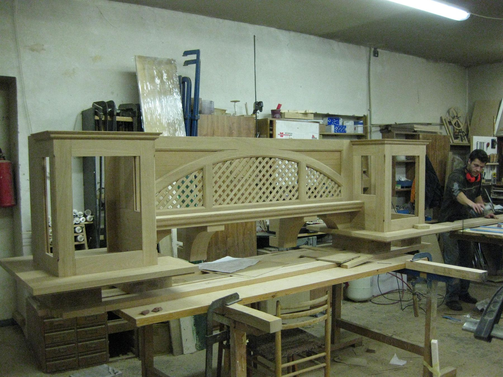